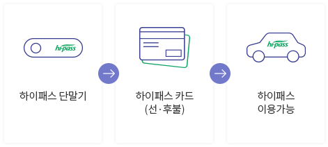
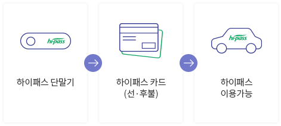
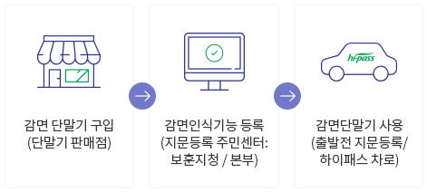

하이패스 이용방법 (일반차량)
도로이용정보
도로이용정보
하이패스에 대해 자세하게 알려드립니다!
- 하이패스란 ?
단말기(OBU)에 하이패스카드를 삽입 후 무선통신(적외선 또는 주파수)을 이용하여 하이패스 차로를 30Km/hr 이하로 무정차 주행하면서
통행료를 지불 하는최첨단 전자요금수납시스템입니다. ※ OBU：On Board Unit
- 광주제2순환도로 1구간 (소태영업소) : 2016.09.01 개방식 - 양방향 4차로
- 광주제2순환도로 3-1구간 (송암영업소) : 2016.07.01 개방식 - 양방향 4차로
- 차종분류 장치 : 진입차량 차종을 분류하는 장치
- 위반차량 촬영 장치 : 위반차량 통과 시 차량번호를 촬영하는 장치
- 안내 전광판/신호등 : 차로 운영상태 및 안내 문구를 표출하는 장치
- 안테나(IR/RF) : 단말기(OBU)로부터 수신된 신호를 시스템에 전송하는 장치
- 차량감지 장치 : 차량 통과여부를 체크하여 위반차량 통과시 촬영 장치에 신호를 전달하는 장치
- 통합차로제어기 : 단말기(OBU)와 통신하여 얻은 데이터를 관리하고 차로시스템 주변기기를 제어하는 장치
- 운전자 표시기 : 통행료수납 정보 및 처리 결과를 운전자에게 알려주는 장치
- 차량단말기(OBU) : 차량내 부착하여 차로 안테나와 무선 송·수신하는 장치
- 전자 카드 : 단말기에 삽입하여 통행료 지불수단으로 사용
하이패스 이용방법 (일반차량)
하이패스 이용방법 (일반차량)

- 감면단말기 판매 대리점에서 단말기 구입 및 차량정보 입력
- 주민센터(유공자 : 보훈지청) 및 지역본부에서 감면인식기에 지문 등록
- 출발 전 지문인식기를 이용 “본인 인증” 후 4시간내 하이패스 통과 인증성공 : 감면 통행요금
- 인증실패 : 정상 통행요금
- 부정사용 방지를 위해 지문인증 유효시간 4시간 설정
- 단말기의 전원 공급 단절 시 재 인증
- 단말기(OBU)를 장착하지 않고 이용한 경우
- 선불하이패스플러스카드에 잔액이 없거나 부족한 상태에서 이용한 경우
- 하이패스플러스카드를 삽입하지 않고 통과한 경우
- 하이패스플러스카드를 잘못 삽입한 경우
- 불량카드나 허가되지 않은 카드를 삽입하여 이용한 경우
- 차종불일치 및 기기이상 등으로 통행료가 정상 수납되지 않는 경우
- 위반유형 발생 시 사무실 운영단말시스템에서 위반차량 근무자 직접 처리
- 처리유형에 맞게 통행료가 “정상” 출금된 차량(통행료 보정 포함)과 “면제” 또는 “미납”차량으로 구분 처리
- 미납으로 분류된 차량은 일주일 단위 차적조회를 통해 미납안내장 우편 발송
- 하이패스차로 안전속도 30Km/h 이하
- 앞 차와의 안전거리 확보 운행